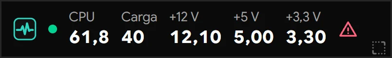

Uma história real
Meu gato derrubou meu PC.
Desde então ele reinicia sozinho. Placa-mãe ou fonte? Para descobrir, construí uma caixa-preta para ele.
O problema
O Windows só diz que o PC desligou.
Não diz por quê.
Log de Eventos · SistemaCrítico
Kernel-Power 41
O sistema foi reinicializado sem ter sido desligado corretamente antes.
Sem saber as tensões e as temperaturas no segundo da queda, o resto é chute.
A ideia
Como o gravador de voo de um avião.
- Grava uma vez por segundo: temperaturas, consumo e carga da CPU, memória e discos.
- E as tensões da fonte: +12 V, +5 V e +3,3 V.
- Não perde os últimos segundos quando a energia cai (SQLite em modo WAL).
- Detecta cada desligamento inesperado no Log de Eventos.
Depois da queda
Os 2 minutos antes de desligar, segundo a segundo.
Aqui o +12 V sai da faixa ATX (abaixo de 11,4 V) enquanto a CPU segue fria. (dados de exemplo)
O diagnóstico
Uma pista honesta,
não um laudo.
Fonte+3
Placa / alimentação+2
Superaquecimento−1
Software−1
Mostra o que pesou a favor e contra cada hipótese, e o que a análise não consegue separar.
No dia a dia
Um mini painel sempre à vista.
Fica no canto da tela, por cima das outras janelas, e acende em vermelho quando algo sai do normal.

Também exporta as quedas e o histórico em CSV, Excel e PDF.
Por dentro
Decisões de que gostei.
- Três processos com o mínimo de privilégio: só o coletor lê o hardware; o painel apenas lê o banco.
- Arquitetura em camadas checada por testes, e cada decisão registrada numa ADR.
- Nada sai da máquina: sem nuvem, sem conta, sem telemetria.
.NET 10Nuxt 4SQLite WALWebView2LibreHardwareMonitor
Seu PC também desliga sozinho?
Testa a Caixa-Preta e me conta o que ela encontrou.
Gratuita · código aberto (MIT) · Windows 11
ogabrielsilva.github.io/
caixa-preta-pc-monitor
Link no primeiro comentário.
Issues e PRs são bem-vindos.